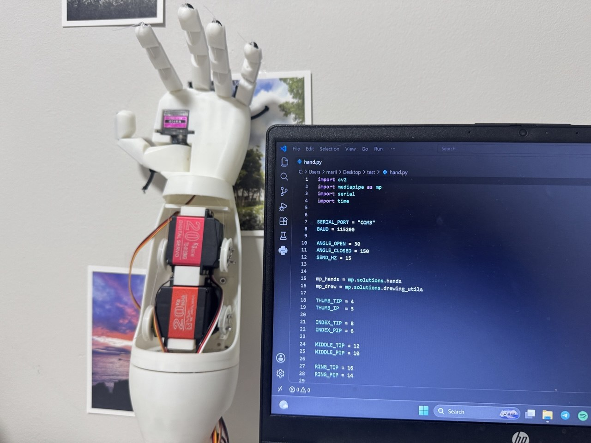
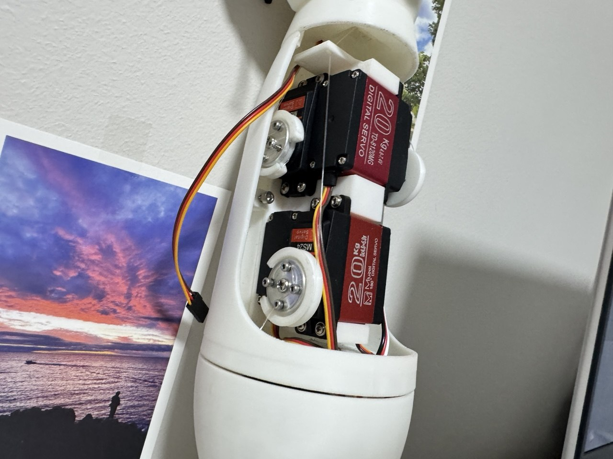
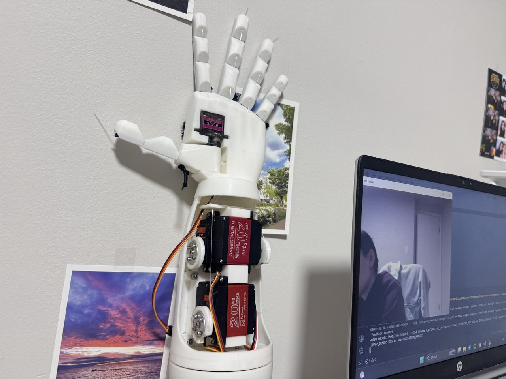

Project 01
Gesture Controlled
Robotic Hand
I designed and built a gesture controlled robotic hand that mirrors a user’s finger movements in real time, making robotic control more natural and intuitive.

The context
Turn movement into
motion.
Robotic hands can feel difficult and unnatural to control especially where users have to rely on buttons or switches.
The normal ways of controlling robots create a separation between the movements that the user intends and the way the robotic arm responds. In this project, computer vision tracks finger positions through a webcam and translates them into real-time servo commands, allowing the robotic hand to mirror gestures without requiring wearable sensors or manual controls.
The process
From gesture to
motion.
The key challenge was connecting computer vision, embedded control, and mechanical movement into one responsive system.
I divided the project into three stages: detecting finger positions, translating those gestures into servo commands, and refining the physical hand mechanism. Each component could be tested individually,which made it easier to identify whether problems came from the software, electronics, or mechanical design.
Tracked whether each finger was open or closed using MediaPipe hand landmarks through the webcam.
Transmitted real time commands from Python to an ESP32 that operated four servos via a PCA9685 driver.
Calibrated servo direction, their angle limits, tendon tension, and return mechanisms to improve finger motion and responsiveness.
Project gallery


